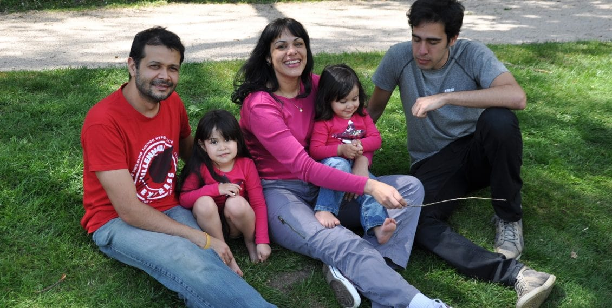
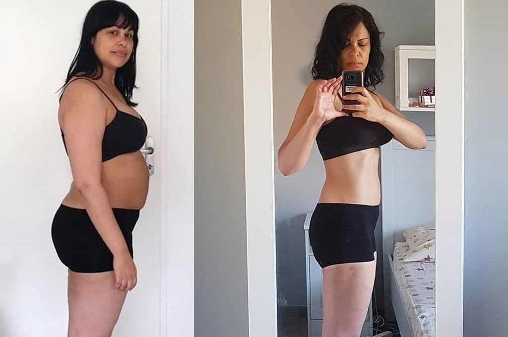
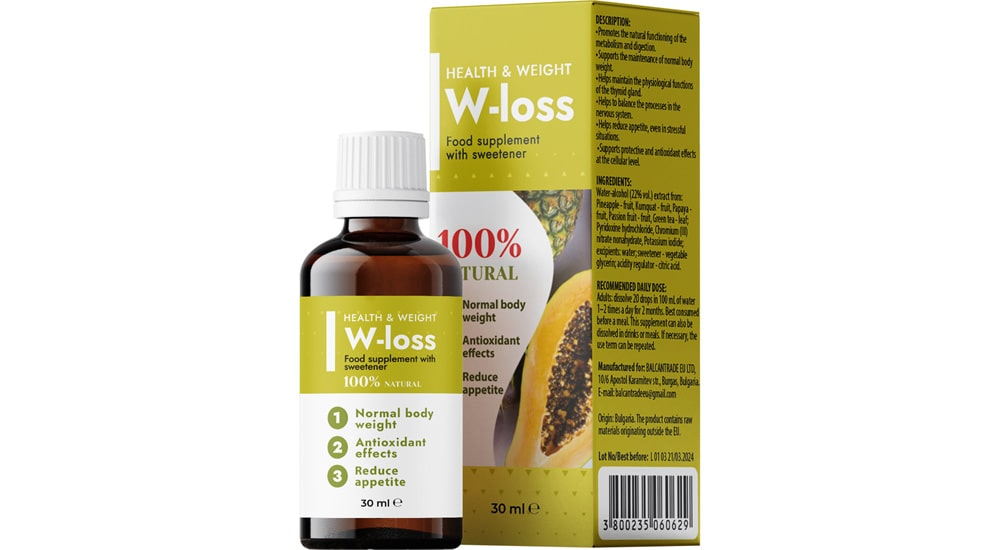
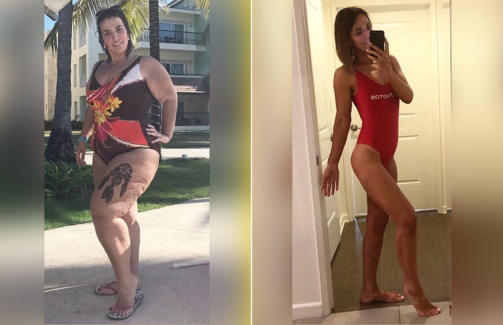
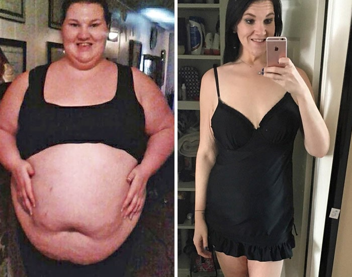
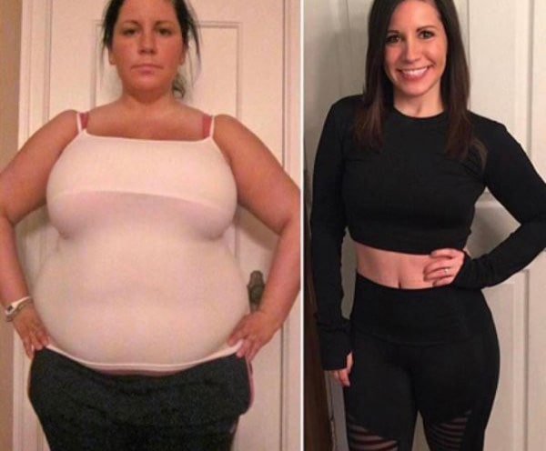
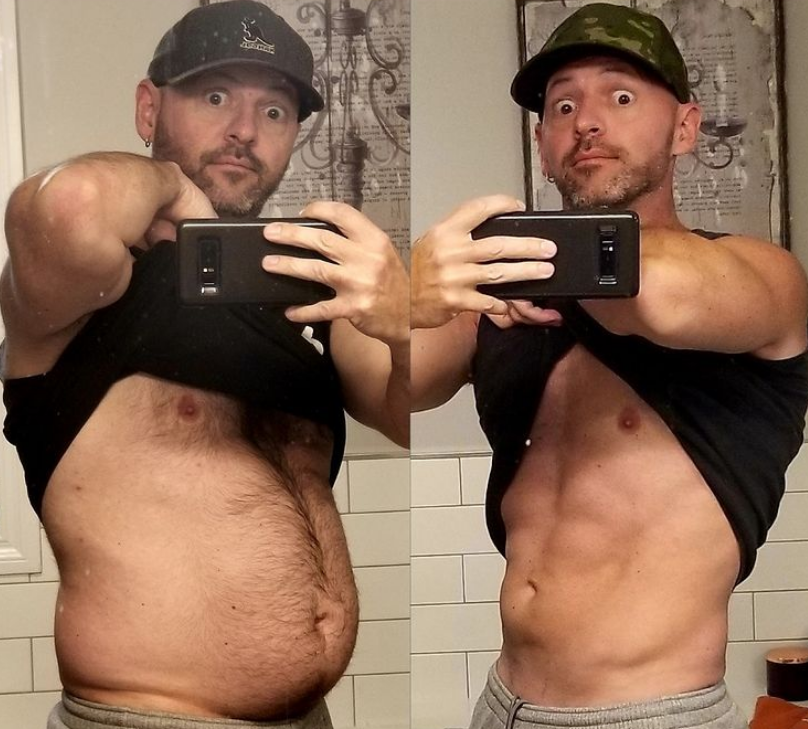

Blog de la Dra. Raquel
Sobre mí: Mi nombre es Raquel, soy inmunóloga-alergista, médica jefa de una clínica, madre de dos hijos.
Mi historia real de perder peso sin dañar la salud y la dieta.
¡Hola lectores de mi blog! Hoy quiero hablarles sobre el método para perder peso, que yo misma utilicé y que me gustaría aconsejar a todas las personas que sufren de exceso de peso. Tome la decisión de escribir este artículo por el hecho de que me encuentro con personas con sobrepeso en los pasillos de mi clínica todos los días. Muchos de ellos no saben qué hacer, cómo comer y qué remedios pueden usarse y cuáles no.


Y comprendo perfectamente a esas personas, ya que yo misma lo he sufrido antes. Siempre he sido una chica que comía bien. En la escuela me enfrenté a el bullying incluso por parte de los maestros, pero por alguna razón mi peso no recibió la debida atención por parte de mi familia. A mi abuela le encantaban mis mejillas regordetas. En casa no teníamos cultura alimentaria: siempre comíamos alimentos fritos y grasosos, así que no había nada de sorprendente en mi exceso de peso.
Cuando fui a la universidad, dejé a mi familia y mi dieta solo empeoró. Me compraba todo tipo de cosas dañinas, comía snacks, estaba siempre en movimiento y con bocadillos. Después de seis meses, dejé de caber en mis jeans viejos, me entraban solo hasta las rodillas. Pero eso no me molestó: estaba estudiando, había muchos chicos alrededor y no experimenté falta de atención.
En mi segundo año de universidad me casé con un chico guapo, él estudiaba para ser programador y mis formas no le molestaban. Han pasado muchos años desde entonces y seguimos juntos. Siempre pensó que era hermosa, sin importar mi peso.

Después de un par de años me quedé embarazada y di a luz, y en ese momento mi peso alcanzó su máximo. Traté de ponerme en orden después de dar a luz, pero durante el segundo embarazo gané aún más kilos.
Estaba aterrorizada por la balanza, pero eso no me impidió comer una comida completa cada tres horas. Después de dar a luz, logré perder algunos kilos, pero no tenía suficiente fuerza de voluntad para más. Traté de cocinar para mí por separado, pero de todos modos estaba frustrada por lo que cocinaba para la familia. Y a veces simplemente no hubo tiempo suficiente para cocinar algo dietético; después de todo, con dos niños hay muchos problemas más importantes.
El punto crítico llegó cuando decidimos hacer una fiesta con nuestros ex compañeros de la Universidad. Uno de ellos, un joven muy discreto (y lo digo sin sarcasmo) me insinuó que sería lindo "hacer ejercicio en bicicleta".
En ese momento, fue como si las anteojeras se me cayeron de los ojos. Por supuesto, entendía antes que no era delgada en absoluto, pero luego simplemente me di cuenta: tenía sobrepeso. No puedo decir cuánto pesaba en ese momento. Dejé de subirme a la balanza cuando mostraban más de 80 kilogramos. Me daba miedo pesarme más.

¡No importa cuánto traté de perder peso entonces! Y sí, no mire el hecho de que soy médico. A veces, los médicos también pueden hacer intentos tontos para perder peso. El episodio más utópico en la pérdida de peso se puede llamar el momento en que traté de perder peso con jugos. Simplemente no comía nada, pero bebía jugos recién exprimidos. Empecé a tener una alergia terrible, pero aun así perdí 7 kilogramos. Sin embargo, después de terminar, regresaron 10 kilos.
Creo que el mayor error para perder peso es confiar en tu propia fuerza de voluntad. La fuerza de voluntad no es un recurso inagotable para todas las personas. Puedes reprimirte todo lo que quieras, pero al final perderas el control y comerás 10 veces más.
¿Cómo adelgazar correctamente? Con esta pregunta, me dirigí a mis colegas. Y me enteré de un producto llamado W-loss.
Lo primero que me preguntó el nutricionista fue: "¿Por qué crees que no estás bajando de peso?" La respuesta es simple: porque como mucho. Como la comida equivocada, no puedo limitarme en el consumo, pierdo el control, es por eso que las dietas no me ayudan.
Pero resultó que se puede perder peso sin hacer dieta, comiendo alimentos familiares para usted, solo necesita reducir las porciones. Y puede hacer esto usando W-loss.

¿Cómo funciona W-loss?
W-loss es un complemento nutricional para adelgazar. Funciona en varias direcciones a la vez:
- Reduce el apetito
Los extractos incluidos en W-loss ayudan a reducir el apetito, así como los antojos de alimentos "nocivos" para la figura: dulces y grasos. Bloquean los receptores responsables de la percepción de estos sabores.
- Estimula el metabolismo
No solo nuestra apariencia depende de la velocidad y estabilidad del metabolismo, sino también nuestro bienestar y estado de salud. W-loss acelera las reacciones químicas en el cuerpo, mejora la secreción de enzimas para el procesamiento de alimentos y acelera su excreción del cuerpo. Por lo tanto, la grasa y los carbohidratos de los alimentos se excretan del cuerpo más rápido y no tienen tiempo para convertirse en depósitos de grasa.
- Quema la grasa
Bueno, y lo más importante, W-loss ayuda a eliminar la grasa corporal vieja. Fortaleciendo el metabolismo celular, aumenta el consumo de energía y el cuerpo comienza a tomar energía de las reservas almacenadas en el tejido graso.
Mis impresiones acerca de W-loss
Cuando comencé a tomar W-loss, noté cambios aproximadamente en una semana después del inicio del curso. Las porciones de comida se redujeron notablemente y ya no tuve que torturarme por esto. El apetito no era tan brutal, no me atraía comer algo como una barra de chocolate entre comidas.
Luego, después de un par de semanas, noté que mis caderas se estaban volviendo más pequeñas porque los pantalones viejos se estaban volviendo demasiado grandes para mí.
Me tomó solo un mes para ponerme en forma completamente, ¡perdí 15 kilos!
Los resultados de mis pacientes a quienes aconsejé W-loss:

“Luché, luego traté de aceptar el sobrepeso, pero todo fue en vano. Así fue hasta que encontré el W-loss. Con él, perdí 40 kilos en dos meses, mi cuerpo cambió por completo y finalmente comencé a amarme a mí misma".
Patricia, 34 años
“Después de perder a mi padre, comencé a encontrar consuelo en los alimentos ricos en calorías. Cuando me dí cuenta, ya pesaba 100 kilos y no tenía idea de qué hacer con ellos. Pero W-loss vino al rescate: logré perder 34 kilos solo gracias a él".
Margarita, 26 años

“He sido regordeta desde la niñez. Crecí en una familia sencilla, así que no comíamos muy correcto y crecí así. Me enteré de W-loss por un amigo, comenzamos a tomarlo juntos. Mi resultado: se han ido 55 kilos de exceso de peso".
Maria Rosa, 43 años
UPD: Muchas preguntas de los lectores: ¿cómo pedir W-loss? Especialmente para usted, coloco un formulario de pedido a continuación. Por cierto, ahora hay un 50% de descuento en este producto. ¡Apúrese!
Lea más historias de personas que perdieron peso con W-loss:

El remedio con el que todos pierden peso Leer mas…

La mejor forma de perder peso que he probado: menos 40 kilogramos y un cuerpo tonificado Leer mas…

Perdí fácilmente 30 kilos y comencé una nueva vida. Mi método para bajar de peso después de 50 años Leer mas…
Se ve mucho más fresca después de perder peso, ¡le queda muy bien!
¡Se ve genial! ¡Las chicas de las reseñas son muy bravo! Muchas son simplemente irreconocibles.
Oh, qué familiar es este problema para mí, cuando no puedes pasar toda la dieta de principio a fin. Me derrumbo constantemente, me odio a mí misma, ¡me regaño! Quiero llorar de mi propia impotencia. Gracias por el gran consejo, dejé una solicitud en el sitio web de W-loss.
Un nutricionista también me aconsejó W-loss, perdí 35 kilogramos después de dar a luz

¡Que felicidad! ¡Me llegó el paquete con W-loss! Finalmente, estoy comenzando) Con suerte, en un mes les mostraré yo también los resultados.
¿Es adecuado para chicos también?
Claro que es adecuado, ¿por qué no? Yo perdí peso con este remedio. También fui al gimnasio al mismo tiempo, crecí mis muslos) así que no tengas miedo, ¡esto es un hallazgo!

¡Los resultados son asombrosos!
¡Gracias por compartir esta información tan útil! Tengo muchas ganas de bajar de peso ...
Yo también perdí peso con W-loss, lo recomiendo)